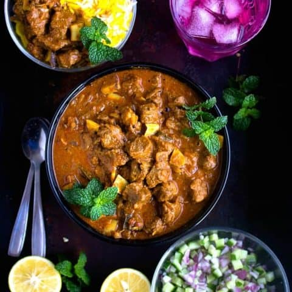

Beef Curry

Ultimate curry full of flavor and deliciousness
With succulent meat cooked in aromatic spices, this Indian style beef curry is the perfect side dish for ushering in the cooler weather.
Ingredients
- 1/2 cup sliced onion
- 3 garlic cloves, chopped
- 1” fresh ginger, chopped
- 1/2 tsp ground turmeric (turmeric powder)
- 1 tbsp ground coriander (coriander powder)
- 1 tbsp garam masala
- 1 tsp red chili powder
- 1 kg gravy or chuck steak (or braising steak), cut into 2.5 cm cubes
- 1/4 cup coconut slices (optional)
- Salt to taste
- 2 tbsp oil
- 1 tsp mustard seeds
- 2 dried bay leaves
- 1 cinnamon stick
- 1 cup chopped onions
- 1/4 tsp ground turmeric (turmeric powder)
- 1 tsp ground coriander (coriander powder)
- 2 tsp garam masala
- 1/2 tsp red chili powder
- Water
- Salt to taste
- 1/4 cup chopped coriander (cilantro) leaves
Steps
- To cook beef over stove top, place diced beef, onions, garlic, ginger, ground turmeric, ground coriander, garam masala and red chili powder in a large frying pan. Season with salt. Cover with water. Cook for 1 hour or until beef is tender
- (To cook in a pressure cooker, place diced beef, sliced onions, garlic, ginger, ground turmeric, ground coriander, garam masala, red chili powder and coconut slices (if using) in a pressure cooker. Season with salt. Stir to combine. Cook, covered, until 5-6 whistles. Remove from heat. Release pressure. Set aside.)
- Heat oil in a large frying pan over medium-high heat. Add mustard seeds and allow to splutter. Add bay leaves and cinnamon stick. Sauté, stirring constantly, for few seconds. Add onions. Sauté, stirring occasionally, for 3-4 minutes or until browned.
- Add ground turmeric, ground coriander, garam masala and red chili powder. Sauté, stirring constantly, for a minute. Season with salt. Add water to make thick sauce. Bring to boil. Simmer 2-3 minutes.
- Add cooked beef. Stir to combine. Add chopped coriander (cilantro) leaves. Simmer 5-6 minutes.
- Garnish with more coriander (cilantro) leaves if you like.